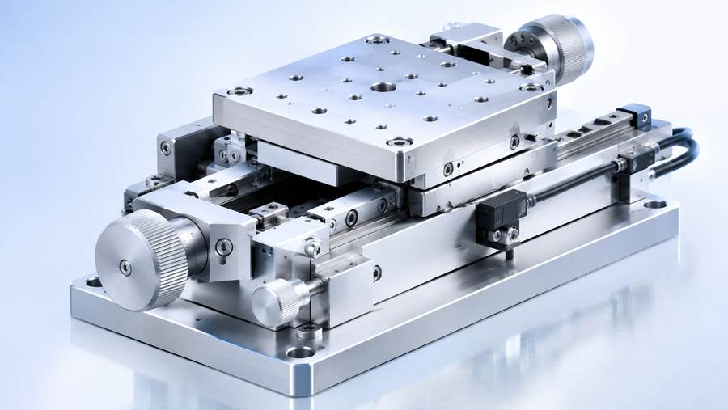

POSITIONING STAGE
位置決めステージ
微細な位置制御が必要な研究・検査・生産設備向けに、高剛性と操作性を両立したユニットを提供します。
サトウテクノロジー株式会社は、精密機器の開発・製造を通じて、研究・開発から生産現場まで、安定した動作と高い再現性を支えます。

高精度・高剛性の位置決めステージを中心に、用途に応じた機構設計とカスタマイズに対応します。
ミクロン単位の位置決めを支える精密設計。
厳しい環境でも安定動作を重視したものづくり。
用途や装置条件に合わせて最適な構成を検討。
導入後の相談まで見据えた伴走型の対応。
架空企業サイトとして、精密機器メーカーらしい製品カテゴリを整理しています。画像を用いて、従来版より視認性を高めています。
微細な位置制御が必要な研究・検査・生産設備向けに、高剛性と操作性を両立したユニットを提供します。
観察・測定・位置合わせの工程を支える機器群。安定した精度を求める現場を幅広く支援します。

設計・製造の流れだけでなく、社内の情報共有や管理業務の見直しまで視野に入れた支援を行います。
単に部品をつくるのではなく、実際の使用環境まで見据えて「安定して動く仕組み」を設計します。用途整理から設計、製造、品質確認まで、現場目線でつないでいくのがサトウテクノロジーの考え方です。
ものづくりの現場だけでなく、経費精算や勤怠管理、社内申請といった管理業務も改善。ByTechFlowの導入により、紙と属人化に頼る運用を見直しました。
精密機器の開発・製造を通じて、研究・製造現場の高度化に貢献する、という設定の架空企業です。課題③の導入事例記事と連動するデモサイトとして制作しています。
※このサイトは学習用の架空サイトです。実在する企業・製品・サービスとは関係ありません。
| 会社名 | サトウテクノロジー株式会社 |
|---|---|
| 代表者 | 佐藤 一郎 |
| 所在地 | 大阪市 |
| 従業員数 | 約30名 |
| 事業内容 | 精密機器の開発・製造、周辺ソリューションの提案 |
仕様検討や技術相談を想定したデモ窓口です。導入事例に登場するByTechFlowについては別ページから確認できます。